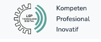
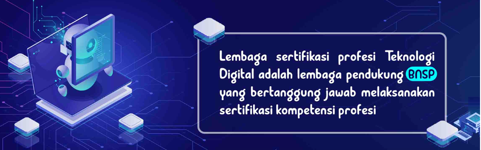

Paham Digital Marketing? Blom Punya Sertifikasi Profesi ?
Nah, buat kalian yang sehari-harinya berkutat dengan dunia digital marketing, pastinya sudah oke banget ilmunya! Sekarang saat yang pas untuk membuatnya lebih memperkaya jurus kalian dengan memiliki sertifikasi profesi digital marketing.
Caranya mudah kok, tinggal daftarkan diri kalian di LSP Teknologi Digital yang merupakan Lembaga Sertifikasi Profesi yang hadirkan kelas-kelas pelatihan dan ujian kompetensi. Kalian akan dibimbing untuk mengikuti ujian kompetensi dari BNSP (Badan Nasional Sertifkasi Profesi).
Segera hubungi Kami di kota kalian ya!
Jakarta : Jl. Pulo Gebang Indah Raya Blok k6 No.10B, Pulo Gebang ,Jakarta Timur, Daerah Khusus Ibukota Jakarta 13950
Yogyakarta : Jalan Demangan Baru No. 8, Catur Tunggal, Depok, Demangan Baru, DIY
Bogor : Pusat Inovasi LIPI Tenant A3, Cibinong, 0817 401157
Catat juga no WA Kami ya di 085329489247 082122064698 dan 081213355783 atau bisa juga email di info@lspdigital.id